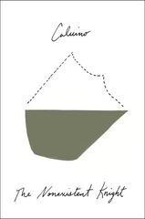

The Nonexistent Knight
Il cavaliere inesistente
As much as The Baron in the Trees started to feel like recognizable Calvino, The Nonexistent Knight did even more. Sister Theodora is fully aware of the reader and increasingly addresses them (rather than telling the story) as the work goes on. What's more, the chapter describing Agilulf's retrievalof Sophronia from the Moors is told largely through verbal description of a map (recalling the dashed air or ship travel lines from pulp serials and Indiana Jones, but with more direct effect on the story).
Once again, though, the women get short shrift and ill treatment; even Bradamante's seeming agency is undermined by her doomed pursuit of Agilulf and her mistaken identity encounter with Raimbaut. I'm not optimistic that Calvino's portrayal of women will improve, sadly.